This project has received funding from the European Union’s Horizon 2020 Research
and Innovation programme under grant agreement number No. 101000309.
-
Coordinator: Antton Alberdi (UCPH)
Data and privacy policy Contact: 3d-omics@sund.ku.dk
The 3D'omics project was a multidisciplinary initiative that reconstructed the animal–microbiota multi-omic interplay in 3D, advancing understanding of how animal genomes and microbial metagenomes interact. The consortium brought together 13 partners in 11 countries: six universities, two research centres, and five companies.
The partners combined expertise across animal health, microbiology, multi-omics, data science and industry.
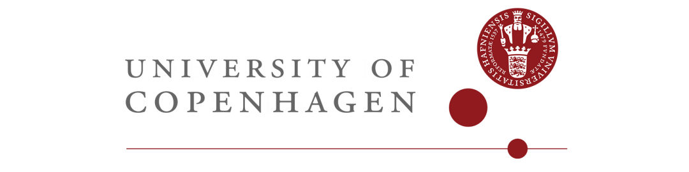
Four departments at the University of Copenhagen (UCPH) took part in the project: the GLOBE Institute, the Section of Microbiology at the Department of Biology, the Department of Veterinary and Animal Sciences, and the Department of Food and Resource Economics.
Role in the project
UCPH coordinated the project and led management (WP1) and dissemination, exploitation and communication (WP2). It also led the development of sample-preparation technology (WP3) and contributed to tasks across the other work packages.
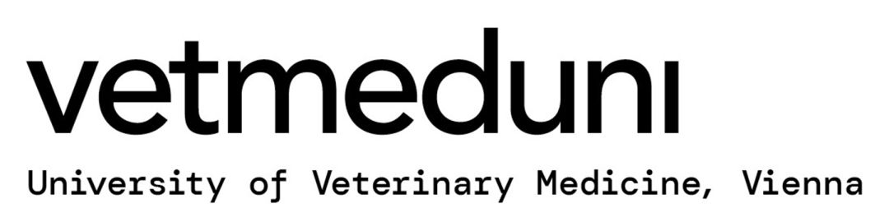
The Vetmeduni Vienna (UVM) was Austria’s only academic institution for teaching and research in veterinary medicine. It was dedicated to animal health, preventive veterinary medicine, public health and food safety.
Role in the project
UVM, led by Prof. Michael Hess, led WP6, which addressed disease challenges in poultry production by deconstructing pathogen–microbiota–animal interactions through 3D’omics. It conducted trials with different poultry species, performed animal phenotyping and KPI analyses, and managed ethics.
Role in the project
KU Leuven, led by Associate Professor Karoline Faust, contributed to data analysis and visualisation (WP5), the poultry health challenge (WP6), and the swine nutrition challenge (WP7).
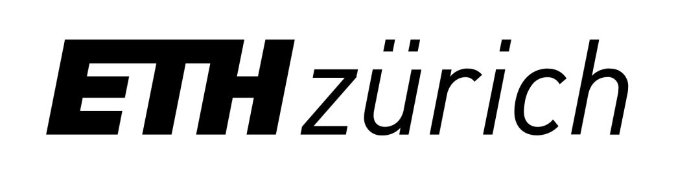
Role in the project
ETH, led by Senior Assistant Dr. Annelies Geirnaert, conducted sampling in in vitro animal-microbiota experiments to establish the 3D’omics technology and investigate synbiotic–pathogen–microbiota interactions in detail before animal trials.
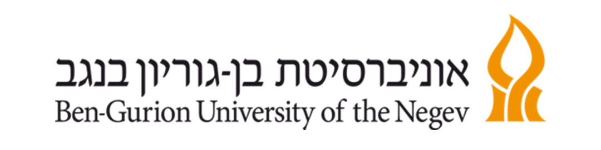
Role in the project
BGU contributed to in vitro model development (WP3), the swine-nutrition challenge analysis (WP7), 3D’omics-based microbiota manipulation (WP8), and international interaction networking (WP2).
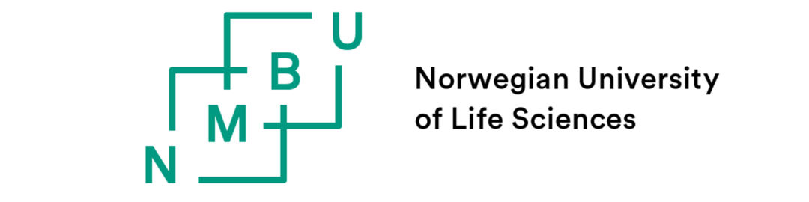
Role in the project
NMBU led the swine-nutrition challenges (WP7), including feed-formulation trials, prebiotic trials, and animal phenotyping and KPI profiling. It also played a key role in conventional multi-omic profiling and the technical comparison between conventional multi-omics and 3D’omics (WP9).
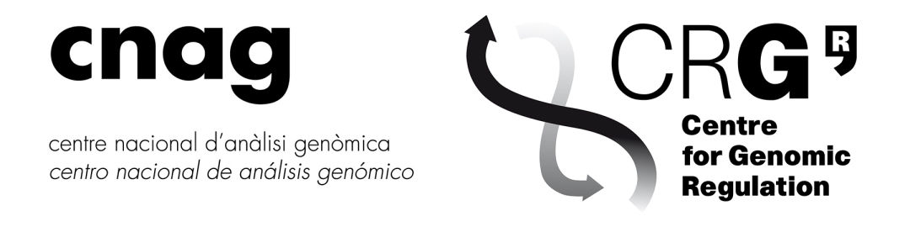
Role in the project
CNAG, through Prof. Marc A. Marti-Renom, led data analysis and visualisation (WP5), developing computational and mathematical procedures to reconstruct and analyse intestinal 3D multi-omic landscapes.
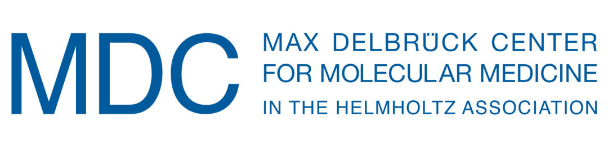
Role in the project
MDC, led by Prof. Ana Pombo, developed 3D’omics technology to reconstruct 3D multi-omic intestinal landscapes from micro-scale genomic and transcriptomic data (WP4), enabling a detailed characterisation of poultry and swine microbial ecosystems at unprecedented resolution.
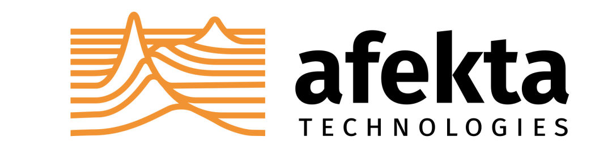
Role in the project
Afekta developed metabolomics methods across the work packages and conducted metabolomics measurements using both new and established methods. It also contributed to data-analytical methods for fusing metabolomics with the other omics methods in the data-analysis work package (WP5).
Role in the project
Aviagen provided industry support for poultry trials (WP6), including subsequent data analysis and interpretation. It also contributed to implementation (WP8) and impact assessment (WP9) of the technologies developed in the project.
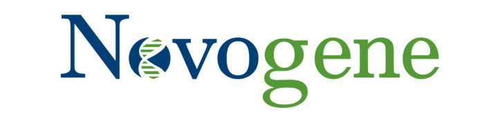
Role in the project
Novogene contributed to the overall sequencing tasks, adapting the existing whole-genome-amplification method to new tissue types (WP4). It also sequenced both 3D’omic and conventional multi-omics libraries (WP6 and WP7).
Role in the project
Biomin contributed to poultry challenge trials (WP5) and the transfer of 3D’omics technology to the feed industry (WP8 and WP9). It also provided all PoultryStar® formulations for the in vivo trials.
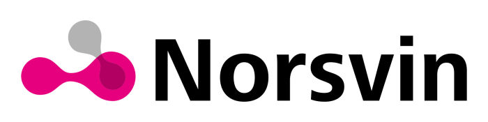
Role in the project
Norsvin linked the results of 3D’omics technology to existing knowledge about the microbiome’s role in pig feed efficiency. It participated in the swine-nutrition challenges (WP6) and impact assessment (WP9).
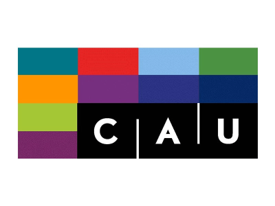
Kiel University, Germany
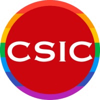
National Research Council, Spain
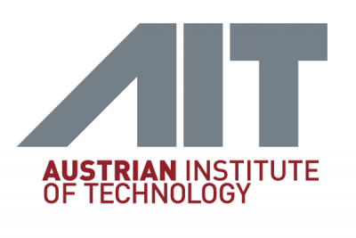
Austrian Institute of Technology, Austria
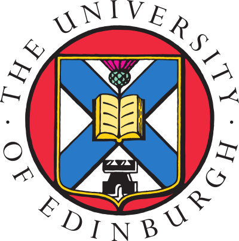
University of Edinburgh, UK
This project has received funding from the European Union’s Horizon 2020 Research
and Innovation programme under grant agreement number No. 101000309.
-
Coordinator: Antton Alberdi (UCPH)
Data and privacy policy Contact: 3d-omics@sund.ku.dk